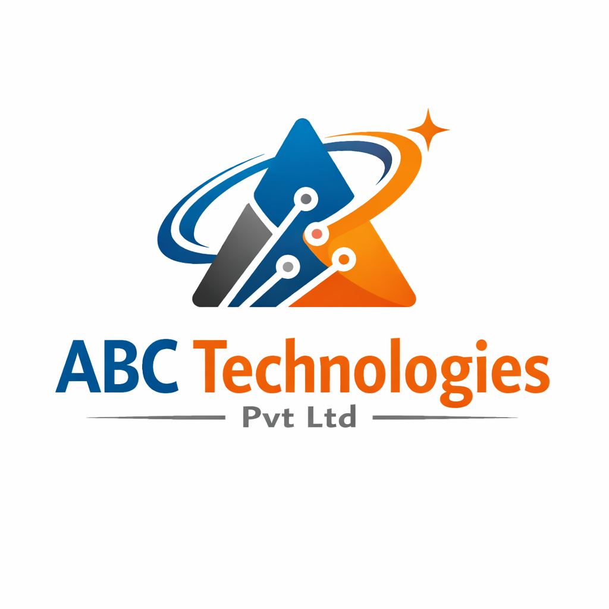

ABC Technologies Pvt Ltd was founded with a vision to provide innovative software solutions and enterprise technology services to businesses worldwide.
2018: Company was founded as a small startup providing software support services.
2019: Expanded into enterprise application support and testing services.
2020: Started working on cloud and digital transformation projects.
2022: Opened new office and expanded development team.
2024: Began providing PLM and Windchill consulting services.
2026: Growing into a full technology solutions company serving global clients.